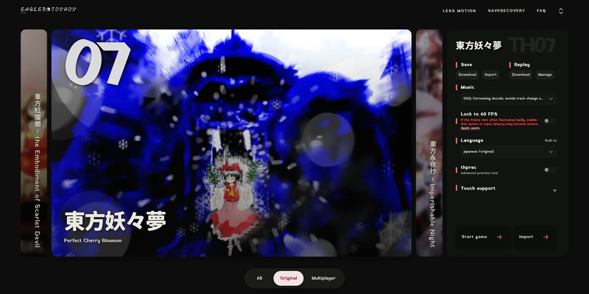
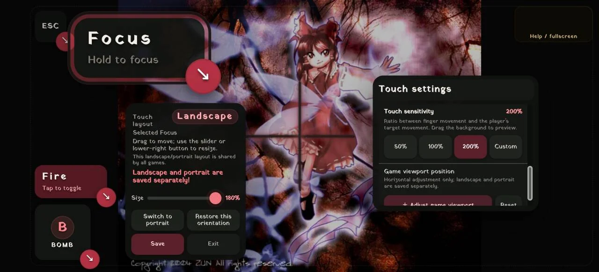
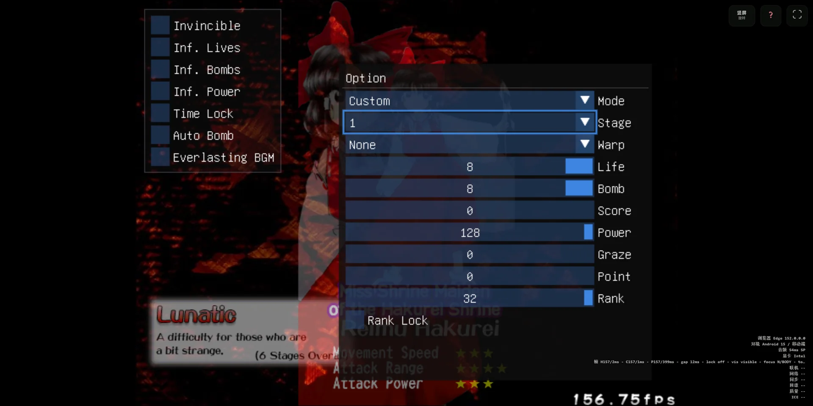
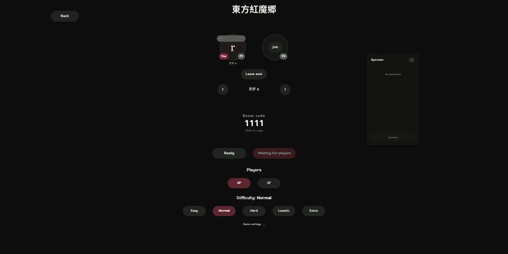

高刷新率
不锁 60 帧，跟着屏幕刷新走。原 portable 分支里的弹幕抖动、运动不流畅、闪烁一并修掉。
REPOST · WEB PORT · 转载移植
东方 Project 原作 STG 的浏览器移植系统。红魔乡、妖妖梦、永夜抄、风神录、绀珠传—— 点开就跑，高刷新率、触控直触、thprac 练习菜单、多语言包、预测回滚联机，一个都不少。
系统还没接进这一屏。按上面那颗启动系统，它就在这儿开。
首次进入要从官方站拉运行组件，慢一点是正常的。
手机建议横屏 + 关掉浏览器手势缩放；键盘党把输入法切掉，Z 射击 / X 放 Bomb / Shift 低速。
不锁 60 帧，跟着屏幕刷新走。原 portable 分支里的弹幕抖动、运动不流畅、闪烁一并修掉。
触摸轨迹就是自机移动轨迹，还提供轮盘与无限速模式。按键可拖可缩（60%–300%），横竖屏分别存。
th06 / th07 / th08 / th10 内置社区练习工具，触屏也能点菜单，Tab Tracker 与作弊菜单各给一个模拟键。
按作品下发语言包，玩家只下载自己选中的那一个。想塞奇怪语种也随你。
th06MP / th07MP / th08MP / th09MP / th10MP。优先 WebRTC，也能走 WebSocket 中继；有旁观位。
原版格式能记的输入与原作互通，记不下的适配输入塞扩展数据。导入导出都在启动器里。
游戏包存在浏览器本地，断网、官方站宕机，刷新页面照样开。
目标是“近乎分毫不差”，原作手感优先，不拿“优化”当借口改判定。




截图出自上游仓库 docs/assets/readme/（GPL-3.0-or-later）。
进度照上游 docs/TOUHOU_PROGRESS.md 抄的，以官方站为准。
想做完整自托管？上游给了 Hosted / External / Import 三套方案，见 docs/SELF_HOSTING.md 。 Import 模式只发启动器与运行组件，玩家自行导入合法持有的游戏包。